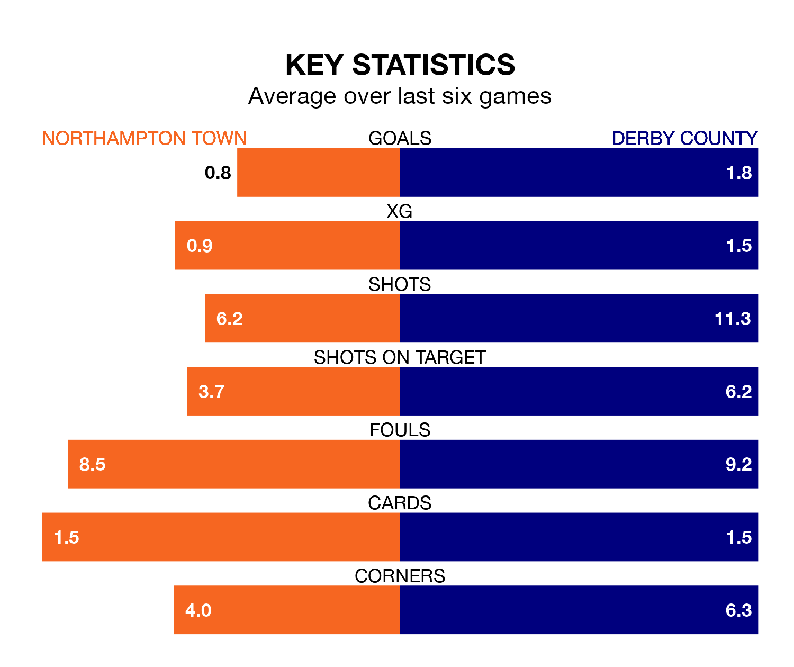

Derby County are strong favourites to take all three points despite Northampton Town's home advantage in Saturday's match at the Sixfields Stadium.
*Betting Company* are offering odds of 1.65 on Derby sealing the win, with the visitors sitting second in EFL League One table.
Northampton, who are 14th in the league and 28 points behind the Rams, are priced at 4.45 to win. A draw is set at 3.43.
With 69 goals in 39 games so far this season, Derby are scoring more than average in the league with 1.8 goals per game. And they are conceding fewer than average, letting in 34 goals at a rate of 0.9 per game.
Northampton, meanwhile, are average scorers, with 1.3 goals per game. They have conceded 1.5 goals per game.
With Joe Wildsmith between the sticks, County can rely on one of the league's safest pair of hands. He has kept 15 clean sheets in his 33 appearances this season, and only two other 'keepers – Portsmouth's Will Norris and Lincoln City's Lukas Jensen – have been able to prevent the opposition scoring on more occasions in EFL League One.
In Town's net, Max Thompson has five clean sheets in 15 games. He has conceded a goal every 79 minutes, 50% more often than the 122 minutes between goals for Wildsmith.
The Cobblers are in disappointing form in EFL League One, with one win and two draws from their last six games.
With four wins and two losses over that period, the Rams' form is much better – they have taken 12 points from 18, compared to the hosts' five.
Northampton's last match was on March 16, a 2-0 loss against Wycombe Wanderers.
Derby beat Bolton Wanderers 1-0 last time out, also on March 16, with Kane Wilson on the scoresheet.
Saturday's match will be refereed by Scott Oldham, who has taken charge of 13 EFL League One games so far this season, issuing four red cards and booking 33 players. He has awarded one penalty.
The last Northampton game Oldham refereed was a 1-0 away loss to Port Vale on September 16. His last Derby match was their 2-1 loss at home against Wigan Athletic on August 5.
Updated: 10:19 (UTC), 22/03/24